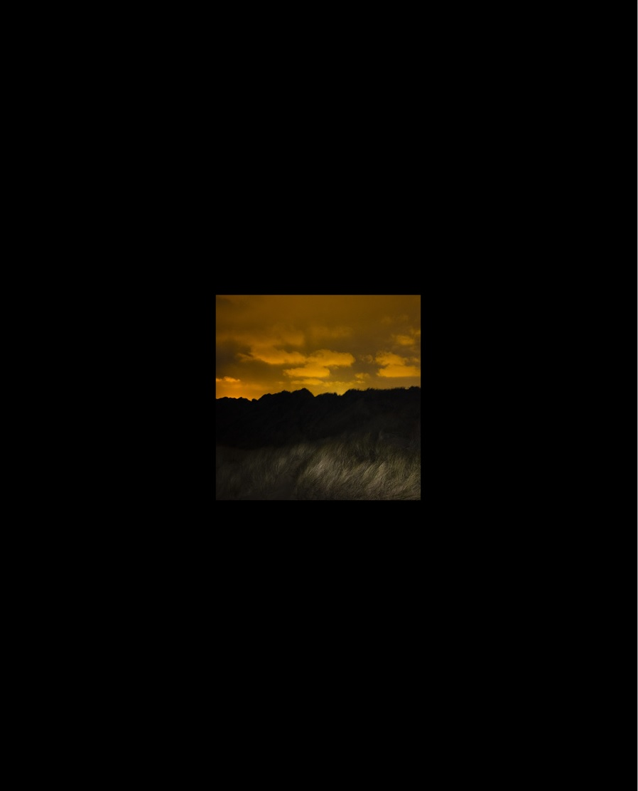
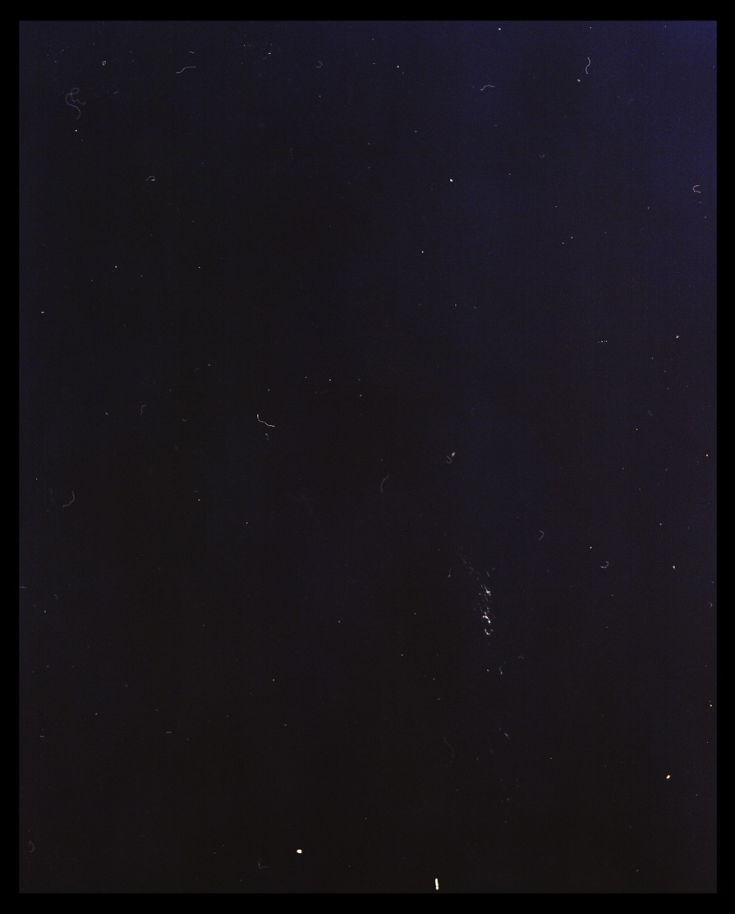
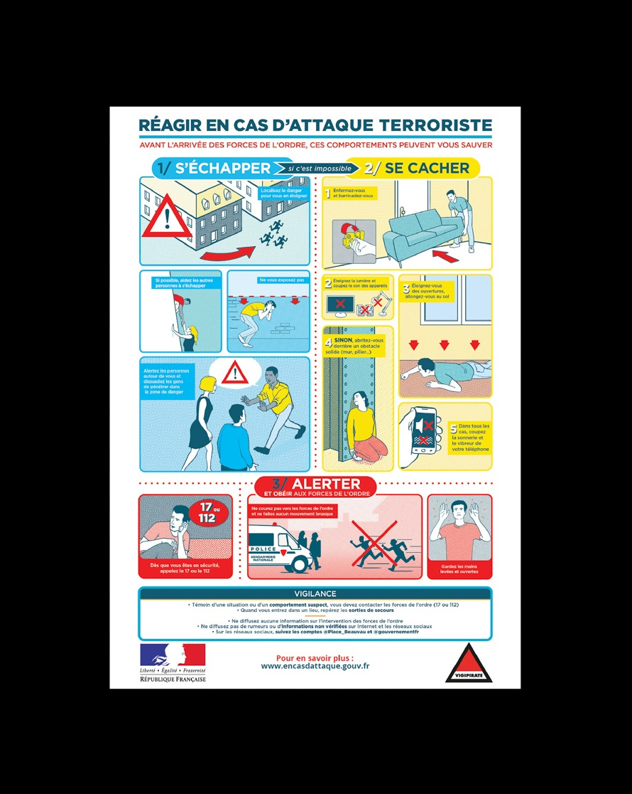
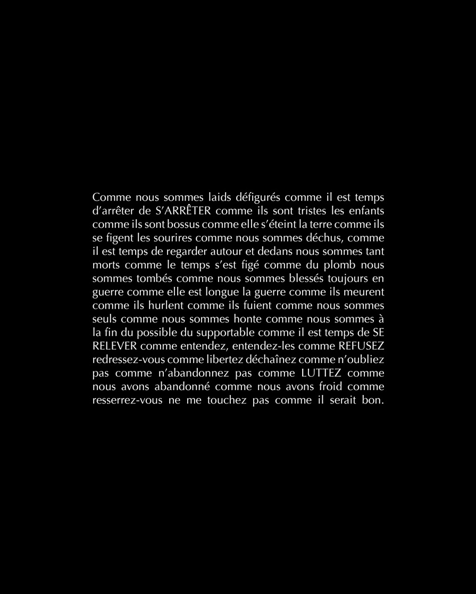
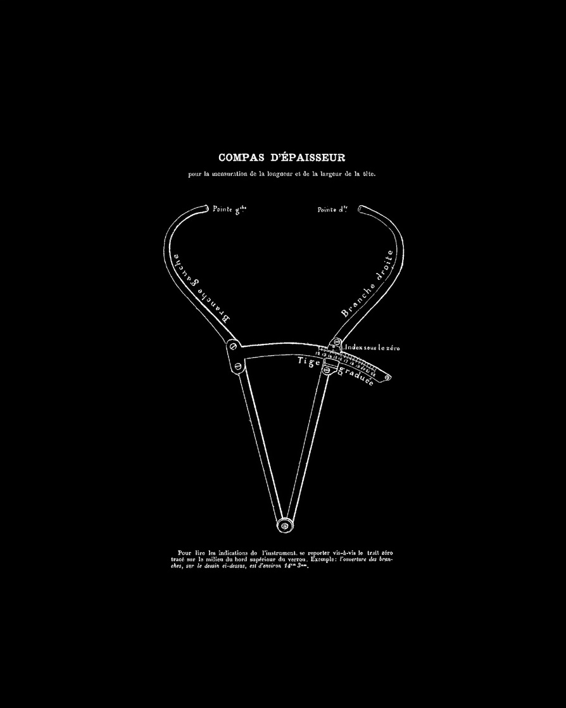
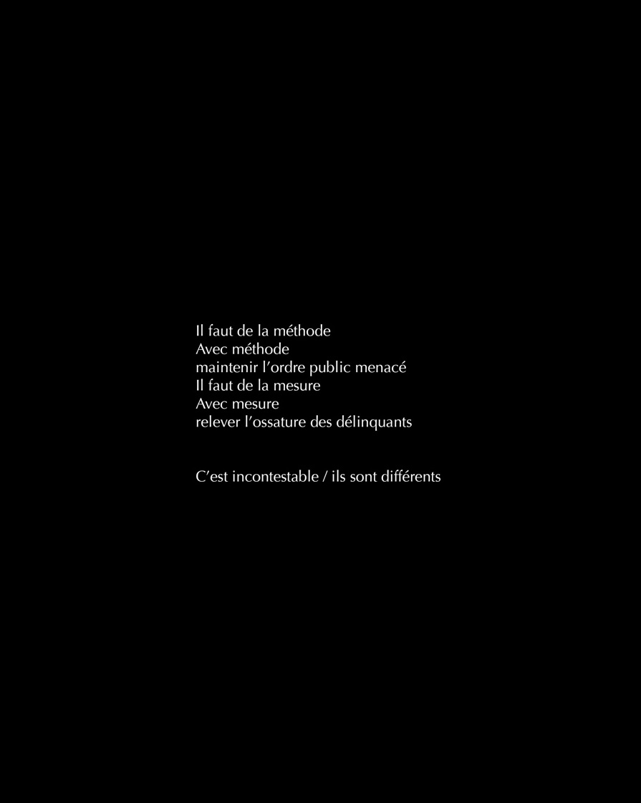
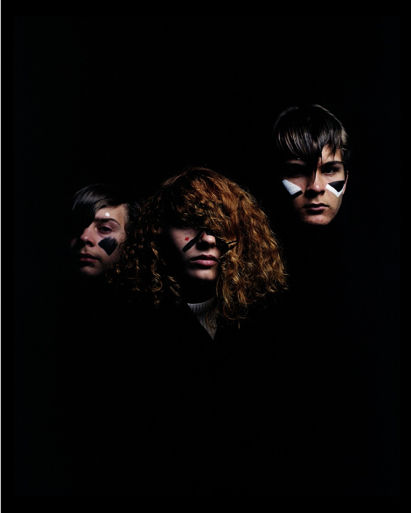
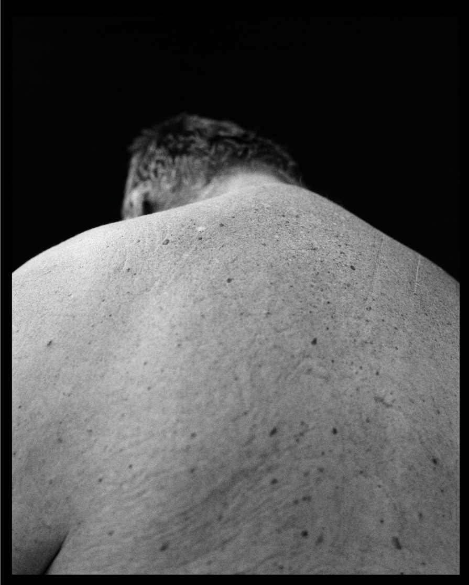
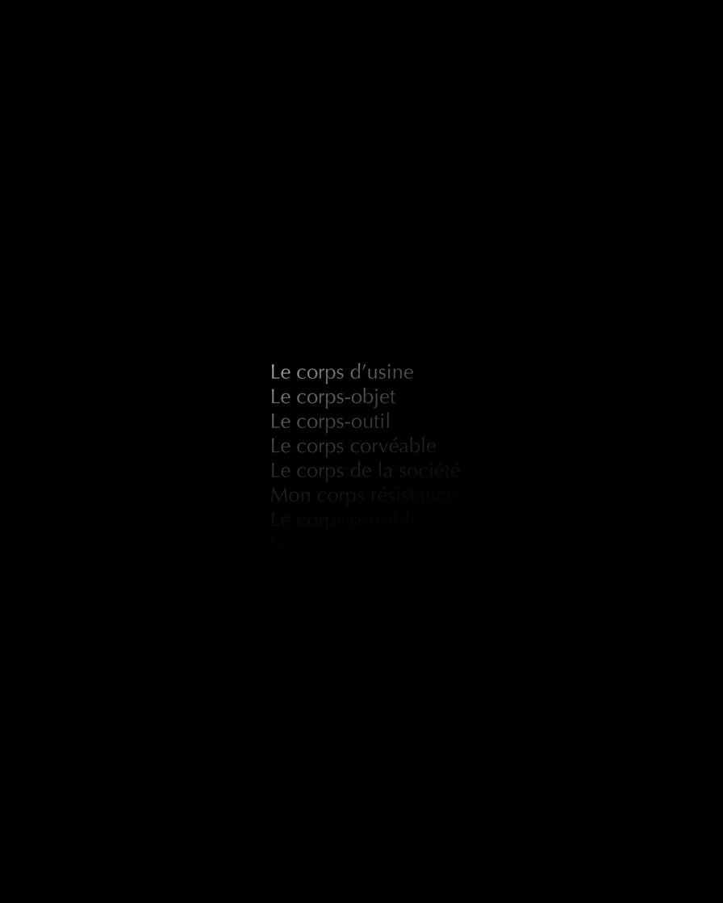
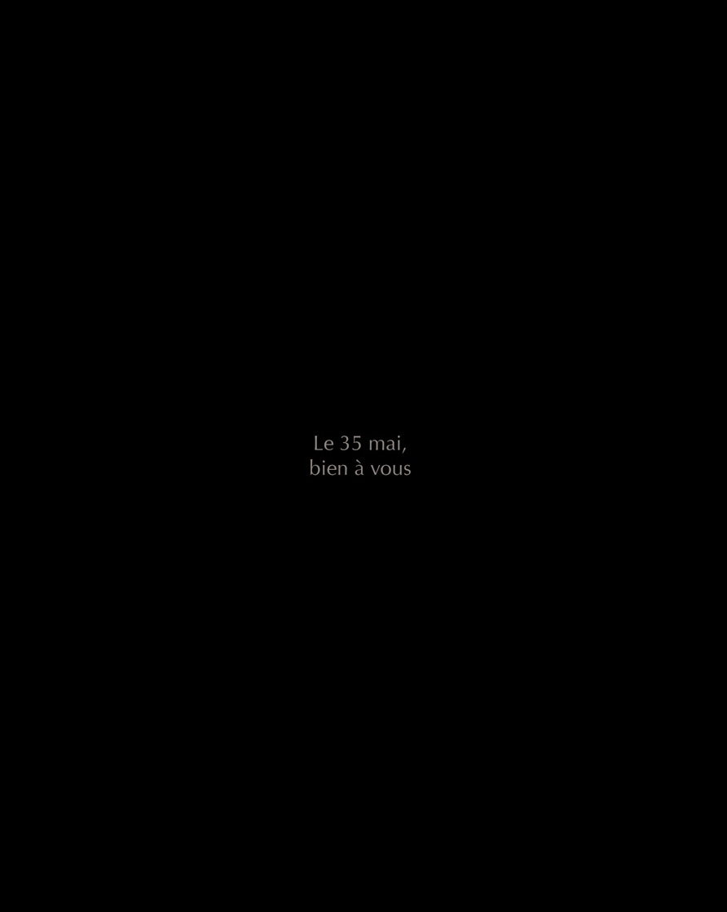

L'Augure
DRESSER
DÉRIVER
POUVOIR
DÉVORER
CREVER
ESQUIVER
DÉPOUILLER
CENSURER
DISPARAÎTRE
L’Augure, dans la Rome antique, était le prêtre dont la charge était d’observer le vol des oiseaux afin d’en tirer des présages pour la conduite des affaires publiques.
Avec L’Augure, nous proposons un arrêt du flux par l’étude de ses trois composantes : l’origine, le trajet et la destination.
Briser la dictature du flux, c’est prendre le temps de réfléchir, de s’extraire de ce courant où nous sommes emportés, souvent noyés.
Les trois mediums complémentaires - archive, texte, image contemporaine - permettent d’enrichir chaque proposition, de la développer et de questionner les interstices produits par la forme et la matière.
Le triptyque devient un acte poétique, une prise de position qui offre au public un espace de réflexion et de nouvelles perspectives.
L’Augure fait partie des collections du CNAP - Centre National des Arts Plastiques.
Avec L’Augure, nous proposons un arrêt du flux par l’étude de ses trois composantes : l’origine, le trajet et la destination.
Briser la dictature du flux, c’est prendre le temps de réfléchir, de s’extraire de ce courant où nous sommes emportés, souvent noyés.
Les trois mediums complémentaires - archive, texte, image contemporaine - permettent d’enrichir chaque proposition, de la développer et de questionner les interstices produits par la forme et la matière.
Le triptyque devient un acte poétique, une prise de position qui offre au public un espace de réflexion et de nouvelles perspectives.
L’Augure fait partie des collections du CNAP - Centre National des Arts Plastiques.










Franck Smith, Voir venir demain
Qu’est-ce donc que regarder, dès lors que livrés au chaos numérique et à l’inflation du virtuel, on ne voit plus rien ?
Chronique poético-documentaire, L’Augure de Perrine Le Querrec et Mathieu Farcy creuse et fonde des interstices privilégiés dans l'emballement du temps présent et de ses excès à partir d’une série de triptyques composés d’archives, de poèmes et de photographies. À leur table de travail, en tant qu’elle est aussi une table d’observation, le duo d’artistes découpe dans une continuité, monte et met en rythme des matières de textes et d’images jusqu’à ce que cela fasse résolution et sortir de leurs limites propres le voir et le dire. Dans cette approche, pour rendre autant visible que lisible les événements de notre histoire contemporaine, figurent l’interaction du politique et de l’esthétique et, sur le plan technique, la pratique du montage et de la mise en relation où chaque élément, libre, créé ou prélevé, prévaut pour lui-même et pourtant par rapport aux autres. Chacun des triptyques ainsi agencé consiste non pas à restituer le réel, c’est-à-dire à en extraire la vérité, mais plutôt à élucider le réel, c’est-à-dire à en exposer les points critiques, les brèches, les désordres, tout en se faisant se court-circuiter et se croiser les différents enjeux de la représentation. Les images de l'un entrent ainsi dans une interaction dialectique avec les textes de l'autre, jouant de leur complicité, parfois de leur disjonction. Ainsi greffées aux photographies de Mathieu Farcy, qui s’offrent comme un essai visuel à part entière, les textes de Perrine Le Querrec n’interprètent pas, ne commentent pas, n’illustrent pas mais énoncent en s’insinuant toujours à la hauteur d’une colère par dépôt de traces dont l’humanité à venir devrait pouvoir s’emparer.
On sait que l’augure c’est l’observation des signes constituant les auspices. Dans la Rome antique, le sénat se servait de certaines superstitions pour contenir le peuple, dans le but de suspendre ou dissoudre ses assemblées tumultueuses (l’abbé de Lamennais, Essai sur l'indifférence en matière de religion). Les deux artistes se sont donnés ici pour charge d'analyser les signes constituant les auspices actuels et d’en conserver les règles de composition. Ils procèdent par coupure dans le flux actuel du tout-opinion et du tout-cliché pour pouvoir se fixer, prendre place et position. Ils déploient dans le ciel politique contemporain, comme l’oiseau du haut de son vol sur les choses restées embourbées à la surface, les conditions de possibilités du voir contemporain — on peut en effet relever un rapport étymologique entre les deux éléments associés au mot auspice : son radical provenant de avis « oiseau » est en effet associé à specere qui veut dire « regarder ».
S’arrêter-voir, donc, pour pouvoir sa-voir, et savoir « se relever » pour pouvoir pré-voir et « lutter ». Mais le tranchant du couteau ne peut être efficace que s’il aiguise les questions les plus essentielles de notre temps : d’abord celles liées à l’ambivalence de la vérité et à la simulation de l’image, au témoignage et à la manipulation relatifs aux actes de terrorisme et de colonisation, mais aussi celles liées à la souffrance et à la violence qui font mourir le monde d’aujourd’hui (migration, censure, métadonnées, etc.).
Si, comme le dit Walter Benjamin, « l’histoire de l’art est une histoire de prophéties », alors L’Augure, par l’assemblage de ses gestes si modestes et si humains, contribuerait ainsi à « voir venir demain ».
Chronique poético-documentaire, L’Augure de Perrine Le Querrec et Mathieu Farcy creuse et fonde des interstices privilégiés dans l'emballement du temps présent et de ses excès à partir d’une série de triptyques composés d’archives, de poèmes et de photographies. À leur table de travail, en tant qu’elle est aussi une table d’observation, le duo d’artistes découpe dans une continuité, monte et met en rythme des matières de textes et d’images jusqu’à ce que cela fasse résolution et sortir de leurs limites propres le voir et le dire. Dans cette approche, pour rendre autant visible que lisible les événements de notre histoire contemporaine, figurent l’interaction du politique et de l’esthétique et, sur le plan technique, la pratique du montage et de la mise en relation où chaque élément, libre, créé ou prélevé, prévaut pour lui-même et pourtant par rapport aux autres. Chacun des triptyques ainsi agencé consiste non pas à restituer le réel, c’est-à-dire à en extraire la vérité, mais plutôt à élucider le réel, c’est-à-dire à en exposer les points critiques, les brèches, les désordres, tout en se faisant se court-circuiter et se croiser les différents enjeux de la représentation. Les images de l'un entrent ainsi dans une interaction dialectique avec les textes de l'autre, jouant de leur complicité, parfois de leur disjonction. Ainsi greffées aux photographies de Mathieu Farcy, qui s’offrent comme un essai visuel à part entière, les textes de Perrine Le Querrec n’interprètent pas, ne commentent pas, n’illustrent pas mais énoncent en s’insinuant toujours à la hauteur d’une colère par dépôt de traces dont l’humanité à venir devrait pouvoir s’emparer.
On sait que l’augure c’est l’observation des signes constituant les auspices. Dans la Rome antique, le sénat se servait de certaines superstitions pour contenir le peuple, dans le but de suspendre ou dissoudre ses assemblées tumultueuses (l’abbé de Lamennais, Essai sur l'indifférence en matière de religion). Les deux artistes se sont donnés ici pour charge d'analyser les signes constituant les auspices actuels et d’en conserver les règles de composition. Ils procèdent par coupure dans le flux actuel du tout-opinion et du tout-cliché pour pouvoir se fixer, prendre place et position. Ils déploient dans le ciel politique contemporain, comme l’oiseau du haut de son vol sur les choses restées embourbées à la surface, les conditions de possibilités du voir contemporain — on peut en effet relever un rapport étymologique entre les deux éléments associés au mot auspice : son radical provenant de avis « oiseau » est en effet associé à specere qui veut dire « regarder ».
S’arrêter-voir, donc, pour pouvoir sa-voir, et savoir « se relever » pour pouvoir pré-voir et « lutter ». Mais le tranchant du couteau ne peut être efficace que s’il aiguise les questions les plus essentielles de notre temps : d’abord celles liées à l’ambivalence de la vérité et à la simulation de l’image, au témoignage et à la manipulation relatifs aux actes de terrorisme et de colonisation, mais aussi celles liées à la souffrance et à la violence qui font mourir le monde d’aujourd’hui (migration, censure, métadonnées, etc.).
Si, comme le dit Walter Benjamin, « l’histoire de l’art est une histoire de prophéties », alors L’Augure, par l’assemblage de ses gestes si modestes et si humains, contribuerait ainsi à « voir venir demain ».